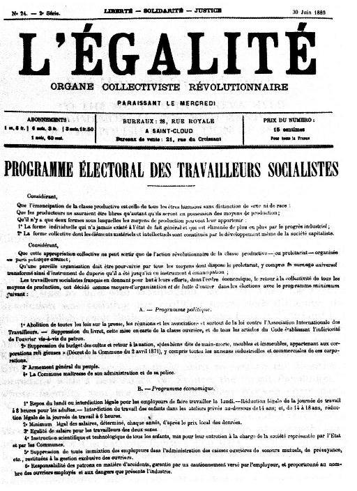

Karl Marx and Jules Guesde 1880
This document was drawn up in May 1880, when French workers' leader Jules Guesde came to visit Marx in London. The Preamble was dictated by Marx himself, while the other two parts of minimum political and economic demands were formulated by Marx and Guesde, with assistance from Engels and Paul Lafargue, who with Guesde was to become a leading figure in the Marxist wing of French socialism. The programme was adopted, with certain amendments, by the founding congress of the Parti Ouvrier (PO) at Le Havre in November 1880.
Concerning the programme Marx wrote: “this very brief document in its economic section consists solely of demands that actually have spontaneously arisen out of the labour movement itself. There is in addition an introductory passage where the communist goal is defined in a few lines.” [1] Engels described the first, maximum section, as “a masterpiece of cogent argumentation rarely encountered, clearly and succinctly written for the masses; I myself was astonished by this concise formulation” [2] and he later recommended the economic section to the German social democrats in his critique of the draft of the 1891 Erfurt Programme. [3]
After the programme was agreed, however, a clash arose between Marx and his French supporters arose over the purpose of the minimum section. Whereas Marx saw this as a practical means of agitation around demands that were achievable within the framework of capitalism, Guesde took a very different view: “Discounting the possibility of obtaining these reforms from the bourgeoisie, Guesde regarded them not as a practical programme of struggle, but simply ... as bait with which to lure the workers from Radicalism.” The rejection of these reforms would, Guesde believed, “free the proletariat of its last reformist illusions and convince it of the impossibility of avoiding a workers ’89.” [4] Accusing Guesde and Lafargue of “revolutionary phrase-mongering” and of denying the value of reformist struggles, Marx made his famous remark that, if their politics represented Marxism, “ce qu'il y a de certain c'est que moi, je ne suis pas Marxiste” (“what is certain is that I myself am not a Marxist”). [5]
The introductory, maximum section of the PO programme appears in the Penguin collection of Marx's political writings, The First International and After, in a translation from the German text in the Marx-Engels Werke. So far as we know the rest of the programme has not been published in English before. The translation which appears here is from the original French version in Jules Guesde, Textes Choisis, 1867-1882, Editions sociales, 1959, pp.117-9. We are grateful to Bernie Moss for providing a copy of the text.
Considering,
That the emancipation of the productive class is that of all human beings without distinction of sex or race;
That the producers can be free only when they are in possession of the means of production [NB];
That there are only two forms under which the means of production can belong to them
Considering,
That this collective appropriation can arise only from the revolutionary action of the productive class – or proletariat - organized in a distinct political party;
That a such an organization must be pursued by all the means the proletariat has at its disposal including universal suffrage which will thus be transformed from the instrument of deception that it has been until now into an instrument of emancipation;
The French socialist workers, in adopting as the aim of their efforts the political and economic expropriation of the capitalist class and the return to community of all the means of production, have decided, as a means of organization and struggle, to enter the elections with the following immediate demands:
1. Marx and Engels, Selected Correspondence, 1975, p.312.
2. Ibid., p.324.
3. Engels, 'A Critique of the Draft Social-Democratic Programme of 1891", in Marx and Engels, Selected Works, 1983, Vol.3, p.438.
4. Bernard H. Moss, The Origins of the French Labour Movement, 1830-1914, 1976, p.107.
5. Ibid., p.11. Marx's famous remark, quoted by Engels in a letter to Eduard Bernstein, can be found in Marx and Engels, Werke, Vol. 35. p.388.
6. The 'livret' was a certificate which a worker was legally obliged to present when taking up a new job, confirming that his debts and obligations to his previous employer had been discharged. The practice was finally abolished in 1890.
7. The Code Napoleon, the French law.
8. i.e. not by direct descendants.
NB: Our thanks to Graham Taylor for pointing out that the words “(land, factories, ships, banks, credit)” which were added here in the text supplied, but were not included in Marx's original wording, and have been deleted, as according to the text printed in L’Égalité.
NB2: The text from here is not authored exclusively by Marx, though he worked on it with Guesde.
{kind=link}